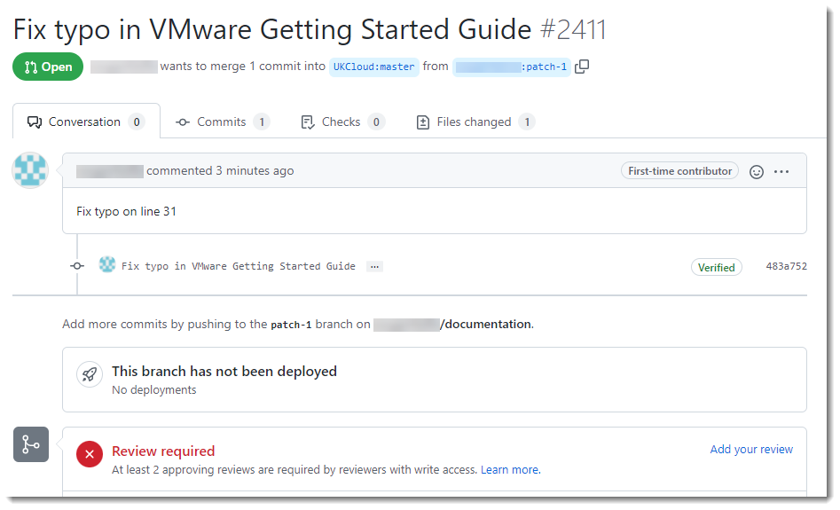

How to contribute to the UKCloud Knowledge Centre
Overview
Content for the UKCloud Knowledge Centre is stored in a GitHub repository, which means that anyone with a GitHub account can submit changes to articles.
This article explains how to submit changes to UKCloud Knowledge Centre articles.
Important
Before making any changes, make sure you're familiar with our guidelines for contributing to Knowledge Centre articles.
Intended audience
This article is intended for anyone who wants to update a Knowledge Centre article. To submit changes you must have a GitHub account.
Submitting changes to an existing article
Go to the UKCloud Knowledge Centre at:
In the article that you want to edit, click Improve this Doc to open the article in GitHub.

If necessary, log in to GitHub.
Click the edit icon (pencil).

Edit the article as required, being sure to follow the appropriate guidelines.
When you're done, at the bottom of the page, enter a title for your change and, optionally, a description to provide more detail.
Click Propose changes.

On the Comparing changes page, scroll down and review the changes you've made.
If you're happy with your changes, click Create pull request.

On the Open a pull request page, you can provide more details about the change you've made, then click Create pull request.

Note
You must click this second Create pull request button to actually create the pull request and submit your changes.
The pull request is submitted to UKCloud to review and merge into the master branch if appropriate. We may contact you to discuss the details of your changes if necessary.

Suggesting significant changes or requesting new articles
If you want to suggest significant changes to the Knowledge Centre, or have a suggestion for a new article, raise an issue within GitHub or contact products@ukcloud.com to share your ideas.
Related videos
Feedback
If you find a problem with this article, click Improve this Doc to make the change yourself or raise an issue in GitHub. If you have an idea for how we could improve any of our services, send an email to feedback@ukcloud.com.